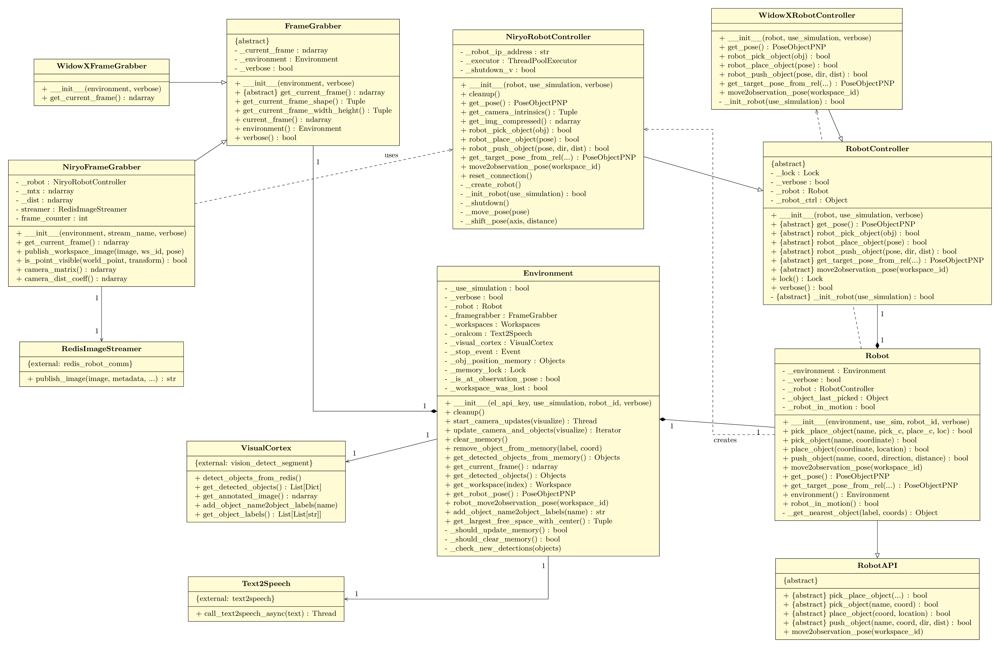

API Reference
Complete API documentation for the Robot Environment package.
Table of Contents
UML Class Diagram

Environment
The Environment class is the central orchestrator for the robot system.
Constructor
Environment(
el_api_key: str,
use_simulation: bool,
robot_id: str,
verbose: bool = False,
start_camera_thread: bool = True
)
Parameters:
- el_api_key (str): ElevenLabs API key for text-to-speech
- use_simulation (bool): True for Gazebo simulation, False for real robot
- robot_id (str): Robot identifier - "niryo" or "widowx"
- verbose (bool): Enable verbose logging output
- start_camera_thread (bool): Start automatic camera updates (default: True)
Example:
env = Environment(
el_api_key="your_key",
use_simulation=False,
robot_id="niryo",
verbose=True
)
Core Methods
start_camera_updates(visualize=False)
Start background thread for continuous camera updates and object detection.
Parameters:
- visualize (bool): Display annotated camera feed in window
Returns: Thread object
Example:
camera_thread = env.start_camera_updates(visualize=True)
stop_camera_updates()
Stop the camera update thread.
cleanup()
Explicit cleanup method - closes connections and stops threads. Call when done with the environment.
env.cleanup()
Object Detection Methods
get_detected_objects()
Get currently detected objects from Redis stream.
Returns: Objects collection
Example:
objects = env.get_detected_objects()
for obj in objects:
print(f"{obj.label()} at {obj.xy_com()}")
get_detected_objects_from_memory()
Get objects from internal memory (thread-safe).
Returns: Objects collection (copy)
Example:
# More reliable than get_detected_objects() during robot motion
objects = env.get_detected_objects_from_memory()
add_object_name2object_labels(object_name: str)
Add new object type to detection system via Redis.
Parameters:
- object_name (str): Object label to add
Returns: Status message (str)
Example:
env.add_object_name2object_labels("screwdriver")
# Result: "Added screwdriver to the list of recognizable objects."
get_object_labels_as_string()
Get comma-separated string of all detectable object labels.
Returns: str
Example:
labels = env.get_object_labels_as_string()
# "I can recognize these objects: cube, cylinder, pencil, ..."
Memory Management Methods
clear_memory()
Clear all objects from memory.
env.clear_memory()
remove_object_from_memory(object_label: str, coordinate: List[float])
Remove specific object from memory after manipulation.
Parameters:
- object_label (str): Label of object to remove
- coordinate (List[float]): Last known [x, y] position
Example:
env.remove_object_from_memory("cube", [0.2, 0.05])
update_object_in_memory(object_label: str, old_coordinate: List[float], new_pose: PoseObjectPNP)
Update object position in memory after movement.
Parameters:
- object_label (str): Object label
- old_coordinate (List[float]): Previous [x, y] position
- new_pose (PoseObjectPNP): New pose after movement
Example:
new_pose = PoseObjectPNP(0.3, 0.1, 0.02, 0.0, 1.57, 0.0)
env.update_object_in_memory("cube", [0.2, 0.05], new_pose)
Multi-Workspace Methods
get_current_workspace_id()
Get ID of currently observed workspace.
Returns: str or None
set_current_workspace(workspace_id: str)
Set the current workspace being observed.
Parameters:
- workspace_id (str): Workspace ID
get_detected_objects_from_workspace(workspace_id: str)
Get objects from specific workspace memory.
Parameters:
- workspace_id (str): Workspace ID
Returns: Objects collection
Example:
left_objects = env.get_detected_objects_from_workspace("niryo_ws_left")
right_objects = env.get_detected_objects_from_workspace("niryo_ws_right")
get_all_workspace_objects()
Get objects from all workspaces.
Returns: Dict[str, Objects] - mapping workspace_id to Objects collection
Example:
all_objects = env.get_all_workspace_objects()
for ws_id, objects in all_objects.items():
print(f"{ws_id}: {len(objects)} objects")
clear_workspace_memory(workspace_id: str)
Clear memory for specific workspace.
remove_object_from_workspace(workspace_id: str, object_label: str, coordinate: List)
Remove object from specific workspace memory.
update_object_in_workspace(source_workspace_id: str, target_workspace_id: str, object_label: str, old_coordinate: List, new_coordinate: List)
Move object between workspaces in memory.
Workspace Methods
get_workspace(index: int = 0)
Get workspace by index.
Parameters:
- index (int): 0-based index
Returns: Workspace object
get_workspace_by_id(workspace_id: str)
Get workspace by ID.
Parameters:
- workspace_id (str): Workspace ID
Returns: Workspace object or None
get_workspace_home_id()
Get ID of home workspace (index 0).
Returns: str
get_visible_workspace(camera_pose: PoseObjectPNP)
Get currently visible workspace based on camera pose.
Parameters:
- camera_pose (PoseObjectPNP): Current camera/gripper pose
Returns: Workspace object or None
is_any_workspace_visible()
Check if any workspace is currently visible.
Returns: bool
get_observation_pose(workspace_id: str)
Get observation pose for workspace.
Parameters:
- workspace_id (str): Workspace ID
Returns: PoseObjectPNP
get_workspace_coordinate_from_point(workspace_id: str, point: str)
Get world coordinate of special workspace points.
Parameters:
- workspace_id (str): Workspace ID
- point (str): Point description - "upper left corner", "upper right corner", "lower left corner", "lower right corner", "center point"
Returns: List[float] - [x, y] coordinates
Example:
upper_left = env.get_workspace_coordinate_from_point("niryo_ws", "upper left corner")
center = env.get_workspace_coordinate_from_point("niryo_ws", "center point")
Spatial Analysis Methods
get_largest_free_space_with_center()
Find largest free space in workspace and its center.
Returns: Tuple[float, float, float] - (area_m2, center_x, center_y)
Example:
area, center_x, center_y = env.get_largest_free_space_with_center()
print(f"Free space: {area*10000:.2f} cm² at [{center_x:.2f}, {center_y:.2f}]")
# Place object at center of free space
robot.pick_place_object(
object_name='box',
pick_coordinate=[0.2, 0.0],
place_coordinate=[center_x, center_y],
location=Location.NONE
)
Robot Control Methods
robot_move2home_observation_pose()
Move robot to observe home workspace.
robot_move2observation_pose(workspace_id: str)
Move robot to observe specific workspace.
Parameters:
- workspace_id (str): Workspace ID
Example:
env.robot_move2observation_pose("niryo_ws_left")
get_robot_pose()
Get current gripper pose.
Returns: PoseObjectPNP
get_robot_in_motion()
Check if robot is currently in motion.
Returns: bool
get_robot_target_pose_from_rel(workspace_id: str, u_rel: float, v_rel: float, yaw: float)
Convert relative image coordinates to world pose.
Parameters:
- workspace_id (str): Workspace ID
- u_rel (float): Horizontal coordinate [0, 1]
- v_rel (float): Vertical coordinate [0, 1]
- yaw (float): Orientation in radians
Returns: PoseObjectPNP
Camera Methods
get_current_frame()
Capture current camera image.
Returns: np.ndarray (BGR image)
get_current_frame_width_height()
Get current frame dimensions.
Returns: Tuple[int, int] - (width, height)
Text-to-Speech Methods
oralcom_call_text2speech_async(text: str)
Asynchronous text-to-speech output.
Parameters:
- text (str): Message to speak
Returns: Thread object
Example:
thread = env.oralcom_call_text2speech_async("Task completed")
thread.join() # Wait for completion
Properties
workspaces()- Returns Workspaces collectionframegrabber()- Returns FrameGrabber objectrobot()- Returns Robot objectuse_simulation()- Returns boolverbose()- Returns bool
Robot
The Robot class provides high-level manipulation operations.
Pick and Place Methods
pick_place_object(object_name: str, pick_coordinate: List, place_coordinate: List, location: Union[Location, str, None] = None, z_offset: float = 0.001)
Complete pick and place operation.
Parameters:
- object_name (str): Name of object to pick
- pick_coordinate (List): [x, y] world coordinates for picking
- place_coordinate (List): [x, y] world coordinates for placement
- location (Location or str): Relative placement - Location.LEFT_NEXT_TO, "right next to", etc.
- z_offset (float): Additional height offset in meters (default: 0.001)
Returns: bool - Success status
Example:
robot = env.robot()
# Simple pick and place
robot.pick_place_object(
object_name='cube',
pick_coordinate=[0.2, 0.05],
place_coordinate=[0.3, 0.1],
location=Location.RIGHT_NEXT_TO
)
# Pick stacked object with z_offset
robot.pick_place_object(
object_name='top_cube',
pick_coordinate=[0.2, 0.05],
place_coordinate=[0.3, 0.1],
location=Location.NONE,
z_offset=0.02 # 2cm above detected position
)
pick_object(object_name: str, pick_coordinate: List, z_offset: float = 0.001)
Pick up a specific object.
Parameters:
- object_name (str): Name of object to pick
- pick_coordinate (List): [x, y] world coordinates
- z_offset (float): Additional height offset (default: 0.001)
Returns: bool
Example:
success = robot.pick_object("pencil", [0.25, 0.05])
place_object(place_coordinate: List, location: Union[Location, str, None] = None)
Place previously picked object.
Parameters:
- place_coordinate (List): [x, y] world coordinates
- location (Location or str): Relative placement position
Returns: bool
Example:
# Must call pick_object first
robot.pick_object("cube", [0.2, 0.05])
robot.place_object([0.3, 0.1], Location.LEFT_NEXT_TO)
push_object(object_name: str, push_coordinate: List, direction: str, distance: float)
Push an object (for objects too large to grasp).
Parameters:
- object_name (str): Name of object to push
- push_coordinate (List): [x, y] world coordinates
- direction (str): "up", "down", "left", "right"
- distance (float): Distance to push in millimeters
Returns: bool
Example:
robot.push_object(
object_name='large_box',
push_coordinate=[0.2, 0.0],
direction='right',
distance=50 # 5cm
)
Multi-Workspace Methods
pick_place_object_across_workspaces(object_name: str, pick_workspace_id: str, pick_coordinate: List, place_workspace_id: str, place_coordinate: List, location: Union[Location, str, None] = None, z_offset: float = 0.001)
Transfer object between workspaces.
Parameters:
- object_name (str): Object to transfer
- pick_workspace_id (str): Source workspace ID
- pick_coordinate (List): [x, y] in source workspace
- place_workspace_id (str): Target workspace ID
- place_coordinate (List): [x, y] in target workspace
- location (Location or str): Relative placement
- z_offset (float): Height offset for picking
Returns: bool
Example:
robot.pick_place_object_across_workspaces(
object_name='cube',
pick_workspace_id='niryo_ws_left',
pick_coordinate=[0.2, 0.05],
place_workspace_id='niryo_ws_right',
place_coordinate=[0.25, -0.05],
location=Location.RIGHT_NEXT_TO
)
pick_object_from_workspace(object_name: str, workspace_id: str, pick_coordinate: List, z_offset: float = 0.001)
Pick object from specific workspace.
place_object_in_workspace(workspace_id: str, place_coordinate: List, location: Union[Location, str, None] = None)
Place object in specific workspace.
Movement Methods
move2observation_pose(workspace_id: str)
Move to observation pose for workspace.
Parameters:
- workspace_id (str): Workspace ID
Example:
robot.move2observation_pose("niryo_ws_left")
time.sleep(2) # Wait for detection
calibrate()
Calibrate the robot.
Returns: bool
Utility Methods
get_pose()
Get current gripper pose.
Returns: PoseObjectPNP
get_target_pose_from_rel(workspace_id: str, u_rel: float, v_rel: float, yaw: float)
Convert relative coordinates to world pose.
Returns: PoseObjectPNP
Properties
environment()- Returns Environment objectrobot()- Returns RobotController objectrobot_in_motion()- Returns boolverbose()- Returns bool
Objects & Detection
Object Class
Represents a detected object with spatial information.
Properties
# Identity
obj.label() # str - Object label
obj.workspace() # Workspace - Associated workspace
# Position (center of mass)
obj.x_com() # float - X coordinate (meters)
obj.y_com() # float - Y coordinate (meters)
obj.xy_com() # Tuple[float, float] - (x, y)
# Dimensions
obj.width_m() # float - Width in meters
obj.height_m() # float - Height in meters
obj.shape_m() # Tuple[float, float] - (width, height)
obj.size_m2() # float - Area in square meters
# Pixel coordinates
obj.u_min() # int - Left pixel
obj.u_max() # int - Right pixel
obj.v_min() # int - Top pixel
obj.v_max() # int - Bottom pixel
obj.width_px() # int - Width in pixels
obj.height_px() # int - Height in pixels
# Orientation
obj.gripper_rotation() # float - Optimal gripper angle (radians)
obj.rotation_rad() # float - Object rotation (radians)
# Pose
obj.pose_com() # PoseObjectPNP - Center of mass pose
obj.pose_center() # PoseObjectPNP - Geometric center pose
# Segmentation
obj.mask() # np.ndarray or None - Binary mask
obj.has_mask() # bool - Has segmentation mask
Methods
# Serialization
obj_dict = obj.to_dict() # Convert to dictionary
obj_json = obj.to_json() # Convert to JSON string
obj = Object.from_dict(obj_dict, workspace) # Reconstruct from dict
# String representations
obj.as_string_for_llm() # Detailed description
obj.as_string_for_llm_lbl() # Compact description
Example:
obj = objects[0]
print(f"Label: {obj.label()}")
print(f"Position: ({obj.x_com():.3f}, {obj.y_com():.3f})")
print(f"Size: {obj.width_m():.3f}m x {obj.height_m():.3f}m")
print(f"Area: {obj.size_m2() * 10000:.2f} cm²")
print(f"Rotation: {obj.gripper_rotation():.2f} rad")
# Serialize
obj_dict = obj.to_dict()
obj_json = obj.to_json()
Objects Class
Collection of Object instances with query methods.
Query Methods
# Find by location
obj = objects.get_detected_object(
coordinate=[0.2, 0.05],
label="cube"
)
# Find nearest
obj, distance = objects.get_nearest_detected_object(
coordinate=[0.25, 0.05],
label="pencil" # Optional: filter by label
)
# Find by size
largest, size = objects.get_largest_detected_object()
smallest, size = objects.get_smallest_detected_object()
# Get sorted list
sorted_objects = objects.get_detected_objects_sorted(ascending=True)
# Spatial filtering
filtered = objects.get_detected_objects(
location=Location.LEFT_NEXT_TO,
coordinate=[0.2, 0.0],
label="cube"
)
Location Filters
from robot_workspace import Location
# Spatial relationships
Location.LEFT_NEXT_TO # y > coordinate[1]
Location.RIGHT_NEXT_TO # y < coordinate[1]
Location.ABOVE # x > coordinate[0]
Location.BELOW # x < coordinate[0]
Location.CLOSE_TO # distance <= 2cm
Location.ON_TOP_OF # On top of reference object
Location.INSIDE # Inside reference object
Location.NONE # No spatial relationship
Example:
objects = env.get_detected_objects()
# Get all cubes
cubes = [obj for obj in objects if "cube" in obj.label().lower()]
# Find nearest pencil to coordinate
pencil, dist = objects.get_nearest_detected_object(
coordinate=[0.25, 0.05],
label="pencil"
)
print(f"Nearest pencil at {dist*100:.1f}cm distance")
# Get objects to the left
left_objects = objects.get_detected_objects(
location=Location.LEFT_NEXT_TO,
coordinate=[0.2, 0.0]
)
# Get largest object
largest, size = objects.get_largest_detected_object()
print(f"Largest: {largest.label()} ({size*10000:.2f} cm²)")
# String representation
print(objects.get_detected_objects_as_comma_separated_string())
# "cube, cylinder, pencil"
Workspaces
Workspace Class
Abstract base class for workspace definitions.
Properties
workspace.id() # str - Workspace ID
workspace.width_m() # float - Width in meters
workspace.height_m() # float - Height in meters
workspace.img_shape() # Tuple - Image shape
Corner Methods
# World coordinates of corners
workspace.xy_ul_wc() # Upper left
workspace.xy_ur_wc() # Upper right
workspace.xy_ll_wc() # Lower left
workspace.xy_lr_wc() # Lower right
workspace.xy_center_wc() # Center point
Coordinate Transformation
pose = workspace.transform_camera2world_coords(
workspace_id="niryo_ws",
u_rel=0.5, # Normalized [0, 1]
v_rel=0.5,
yaw=0.0
)
# Returns: PoseObjectPNP in world coordinates
Example:
workspace = env.get_workspace(0)
print(f"ID: {workspace.id()}")
print(f"Size: {workspace.width_m():.3f}m x {workspace.height_m():.3f}m")
# Get corners
ul = workspace.xy_ul_wc()
lr = workspace.xy_lr_wc()
print(f"Upper left: ({ul.x:.3f}, {ul.y:.3f})")
print(f"Lower right: ({lr.x:.3f}, {lr.y:.3f})")
# Transform image coordinates to world
pose = workspace.transform_camera2world_coords(
workspace_id="niryo_ws",
u_rel=0.5, # Center of image
v_rel=0.5,
yaw=0.0
)
Workspaces Collection
Methods
workspaces = env.workspaces()
# Get workspace by ID
ws = workspaces.get_workspace_by_id("niryo_ws")
# Get workspace by index
ws = workspaces.get_workspace(0)
# Get home workspace
home_ws = workspaces.get_home_workspace()
home_id = workspaces.get_workspace_home_id()
# Get visible workspace
visible_ws = workspaces.get_visible_workspace(camera_pose)
# Get observation pose
obs_pose = workspaces.get_observation_pose("niryo_ws")
Camera
FrameGrabber Class
Abstract base class for camera interfaces.
Methods
framegrabber = env.framegrabber()
# Capture frame
frame = framegrabber.get_current_frame() # np.ndarray (BGR)
# Get dimensions
shape = framegrabber.get_current_frame_shape()
width, height = framegrabber.get_current_frame_width_height()
# Properties
current_frame = framegrabber.current_frame()
environment = framegrabber.environment()
verbose = framegrabber.verbose()
NiryoFrameGrabber
Niryo-specific implementation.
Additional Methods
# Camera intrinsics
mtx = framegrabber.camera_matrix()
dist = framegrabber.camera_dist_coeff()
# Redis streaming
stream_id = framegrabber.publish_workspace_image(
image,
workspace_id="niryo_ws",
robot_pose={'x': 0.2, 'y': 0.0, 'z': 0.3}
)
# Visibility check
is_visible = framegrabber.is_point_visible(
world_point=np.array([0.24, 0.01, 0.001]),
camera_to_gripper_transform=np.eye(4)
)
Robot Controller
RobotController Class
Abstract base class for robot hardware control.
Core Methods
controller = env.get_robot_controller()
# Pose
pose = controller.get_pose()
# Pick and place (low-level)
success = controller.robot_pick_object(pick_pose)
success = controller.robot_place_object(place_pose)
success = controller.robot_push_object(push_pose, direction, distance)
# Movement
controller.move2observation_pose(workspace_id)
# Coordinate transformation
pose = controller.get_target_pose_from_rel(
workspace_id, u_rel, v_rel, yaw
)
# Calibration
success = controller.calibrate()
# Thread safety
with controller.lock():
# Thread-safe robot operations
pose = controller.get_pose()
NiryoRobotController
Niryo Ned2 specific implementation.
Additional Methods
# Camera
mtx, dist = controller.get_camera_intrinsics()
img_compressed = controller.get_img_compressed()
# Connection
controller.reset_connection()
controller.cleanup()
Text-to-Speech
Text2Speech Class
Natural language feedback.
Usage
# Async speech
thread = env.oralcom_call_text2speech_async(
"I have picked up the cube"
)
# Wait for completion (optional)
thread.join()
# Non-blocking
thread = env.oralcom_call_text2speech_async("Task completed")
# Continue with other operations...
Data Types
PoseObjectPNP
6-DOF pose representation.
from robot_workspace import PoseObjectPNP
# Create pose
pose = PoseObjectPNP(
x=0.25, # meters
y=0.05, # meters
z=0.02, # meters
roll=0.0, # radians
pitch=1.57, # radians (π/2)
yaw=0.0 # radians
)
# Copy with offsets
new_pose = pose.copy_with_offsets(
x_offset=0.01,
y_offset=0.0,
z_offset=0.05
)
# Arithmetic
pose3 = pose1 + pose2
pose4 = pose1 - pose2
# Transformation matrix
matrix = pose.to_transformation_matrix() # 4x4 homogeneous
# Coordinate access
coords = pose.xy_coordinate() # [x, y]
Location Enum
from robot_workspace import Location
# Spatial relationships
Location.LEFT_NEXT_TO
Location.RIGHT_NEXT_TO
Location.ABOVE
Location.BELOW
Location.ON_TOP_OF
Location.INSIDE
Location.CLOSE_TO
Location.NONE
# Convert from string
location = Location.convert_str2location("left next to")
Complete Example
from robot_environment import Environment
from robot_workspace import Location
import time
# Initialize
env = Environment(
el_api_key="your_key",
use_simulation=False,
robot_id="niryo",
verbose=True
)
# Start camera updates
camera_thread = env.start_camera_updates(visualize=False)
# Move to observation pose
env.robot_move2observation_pose(env.get_workspace_home_id())
time.sleep(2) # Wait for detection
# Get robot interface
robot = env.robot()
# Get detected objects
objects = env.get_detected_objects()
print(f"Detected {len(objects)} objects")
# Find nearest cube
cube, dist = objects.get_nearest_detected_object(
coordinate=[0.2, 0.0],
label="cube"
)
if cube:
# Find largest free space
area, center_x, center_y = env.get_largest_free_space_with_center()
# Pick and place
success = robot.pick_place_object(
object_name=cube.label(),
pick_coordinate=[cube.x_com(), cube.y_com()],
place_coordinate=[center_x, center_y],
location=Location.NONE
)
if success:
print("Task completed successfully")
# Cleanup
env.cleanup()
Error Handling
try:
# Robot operations
success = robot.pick_place_object(
object_name='cube',
pick_coordinate=[0.2, 0.05],
place_coordinate=[0.3, 0.1],
location=Location.RIGHT_NEXT_TO
)
if not success:
print("Operation failed")
except Exception as e:
print(f"Error: {e}")
finally:
env.cleanup()
Thread Safety
All robot operations are thread-safe:
# Automatic locking
pose = env.get_robot_pose()
# Manual locking for multiple operations
with env.get_robot_controller().lock():
pose1 = robot.get_pose()
pose2 = robot.get_target_pose_from_rel("niryo_ws", 0.5, 0.5, 0.0)
See Also
- README.md - Getting started
- Architecture Documentation - System design
- Multi-Workspace Guide - Advanced usage
- Troubleshooting - Common issues